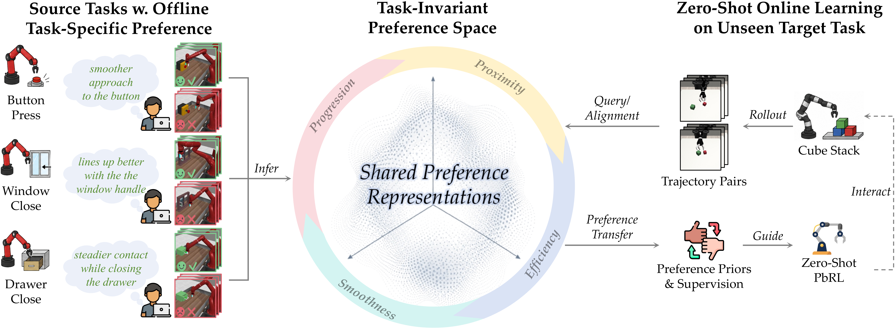
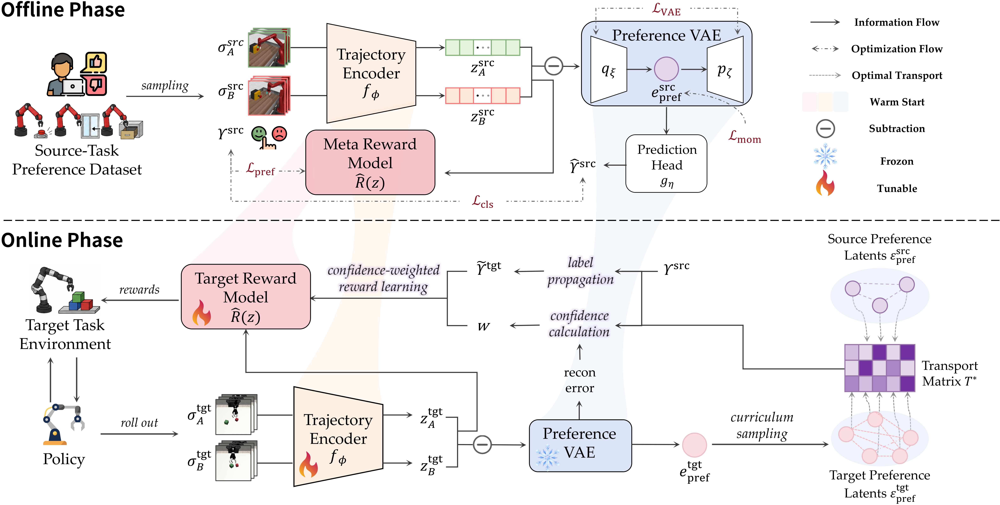
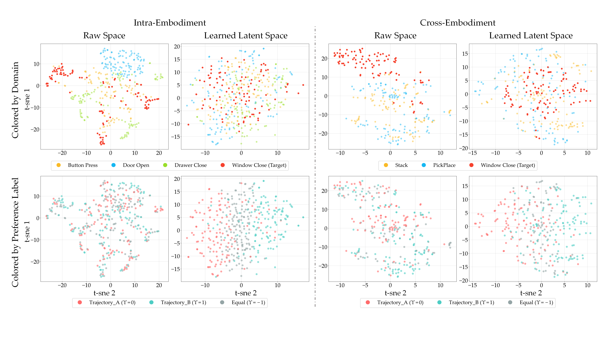
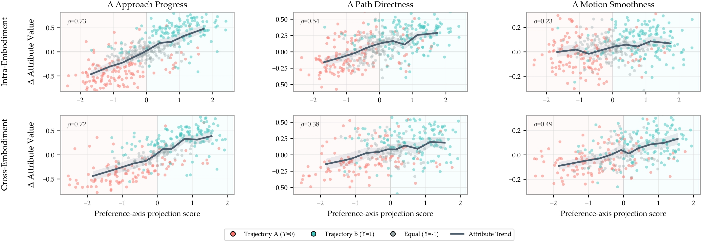
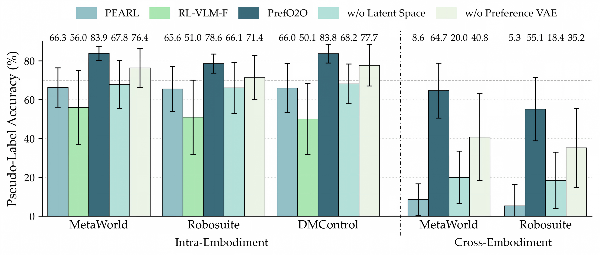
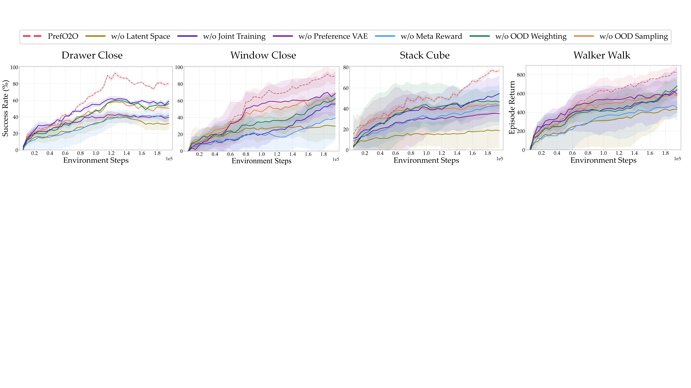
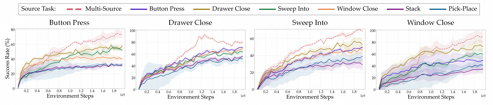
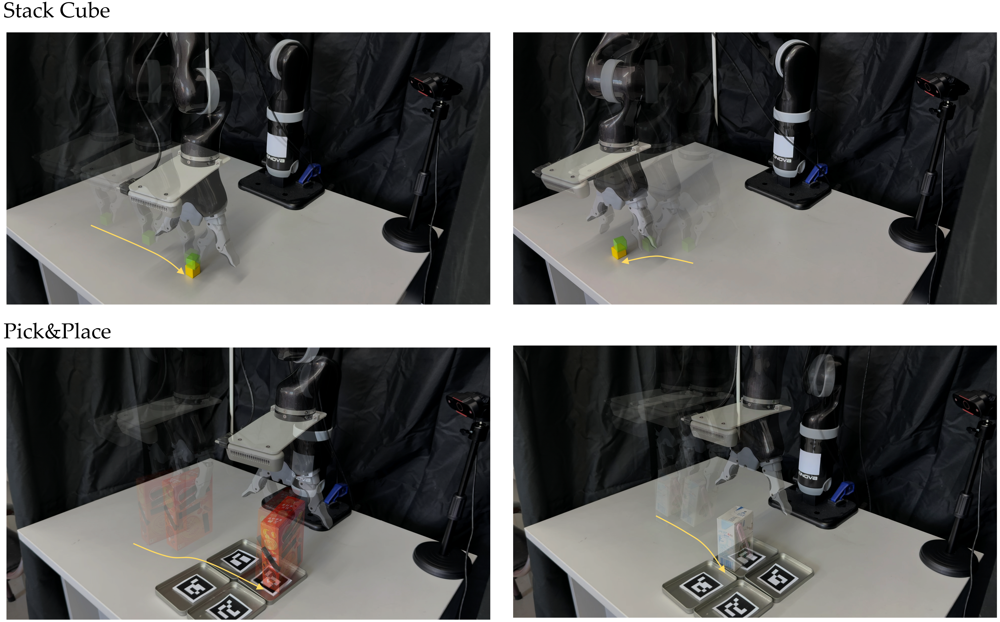

Offline latent preference learning
Source-task trajectory pairs are encoded into behavioral representations. A preference VAE shapes a task-invariant latent manifold, while a meta reward model learns a reusable preference-aligned reward prior.
PrefO2O learns a task-invariant latent preference space from a small set of offline source-task preferences, then transfers reward priors and confidence-weighted pseudo-preferences to unseen target tasks without collecting target-task human feedback.

Motivation
Preference-based RL aligns robot behavior with human intent, but most methods still require fresh preference labels whenever the task changes. That per-task annotation cost becomes a bottleneck for practical robotic deployment.
PrefO2O treats preference as a transferable structure. Instead of aligning raw trajectories, it learns a latent space where source and target trajectory pairs can be compared by shared behavioral qualities such as progress, directness, smoothness, and stable interaction.
Method
PrefO2O combines a trajectory encoder, preference VAE, and meta reward model in the source domain, then performs OOD-aware optimal transport in the learned preference space during target-task learning.
Source-task trajectory pairs are encoded into behavioral representations. A preference VAE shapes a task-invariant latent manifold, while a meta reward model learns a reusable preference-aligned reward prior.
On an unseen target task, PrefO2O warm-starts the reward model and encoder, freezes the preference VAE, aligns source and target latent pairs with optimal transport, and propagates confidence-weighted labels.
Pseudo-preference labels are filtered by OOD-aware curriculum sampling and confidence weighting, keeping target reward learning stable as the policy explores new trajectories.

Representation analysis
The learned space is more task- and embodiment-invariant than raw trajectory-pair representations, yet it remains organized around interpretable preference-relevant behavior.


Results
Across Meta-World, Robosuite, and DeepMind Control Suite, PrefO2O consistently outperforms preference transfer baselines and is competitive with oracle RL and PbRL references trained with privileged supervision.




Real-world robot validation
PrefO2O policies are trained in simulation, then deployed on real Cube Stacking and Pick-and-Place tasks without collecting target-task human feedback on the physical robot.

7/10 real-world success with PrefO2O.
6/10 real-world success with PrefO2O.
Citation
@article{anonymous2026prefo2o,
title = {PrefO2O: Zero-Shot Preference-Based Reinforcement Learning via Offline-to-Online Latent Preference Transfer},
author = {Anonymous Author(s)},
journal = {Under review},
year = {2026}
}